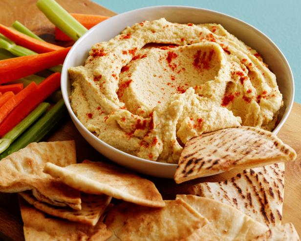
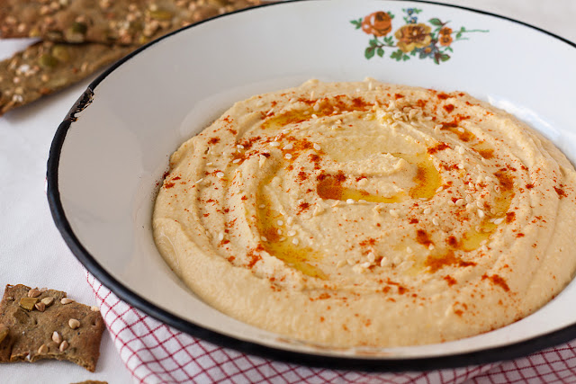
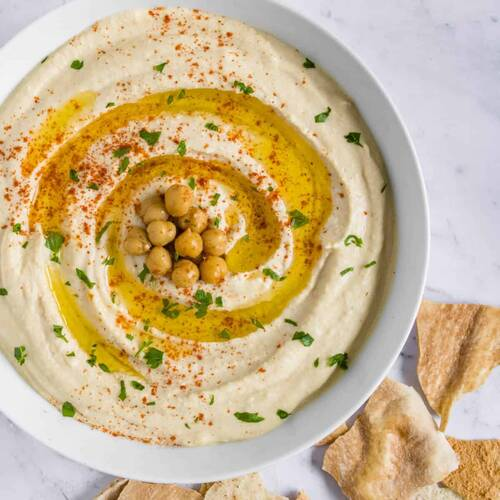
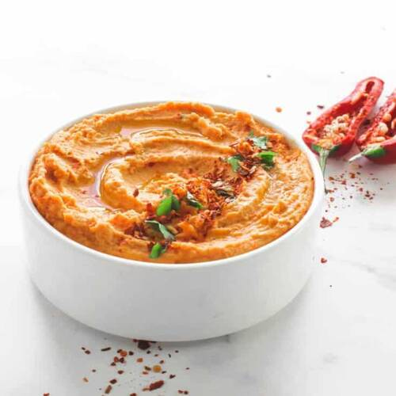
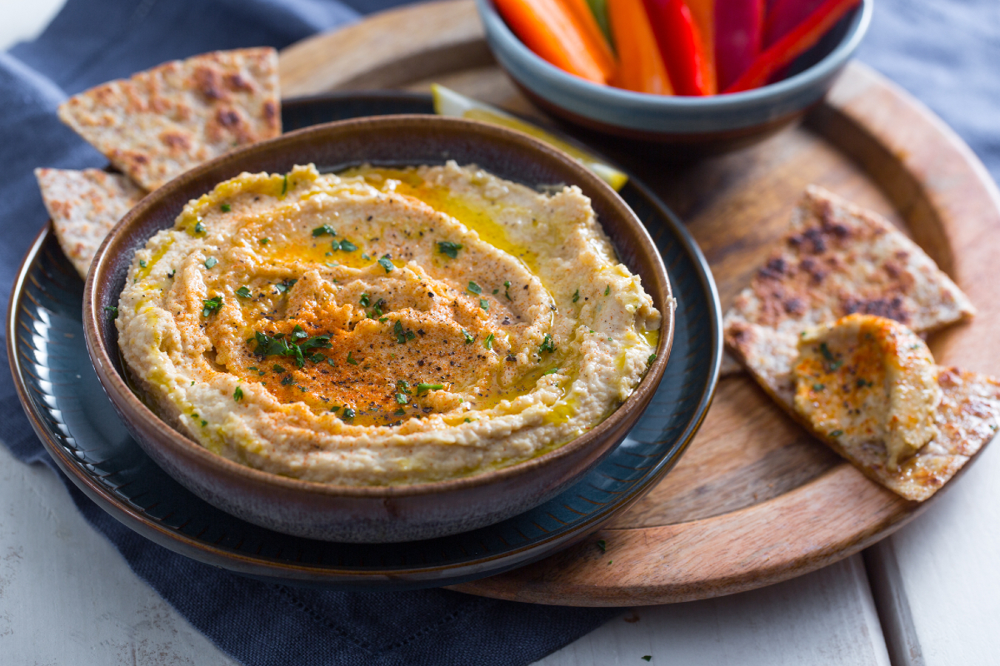
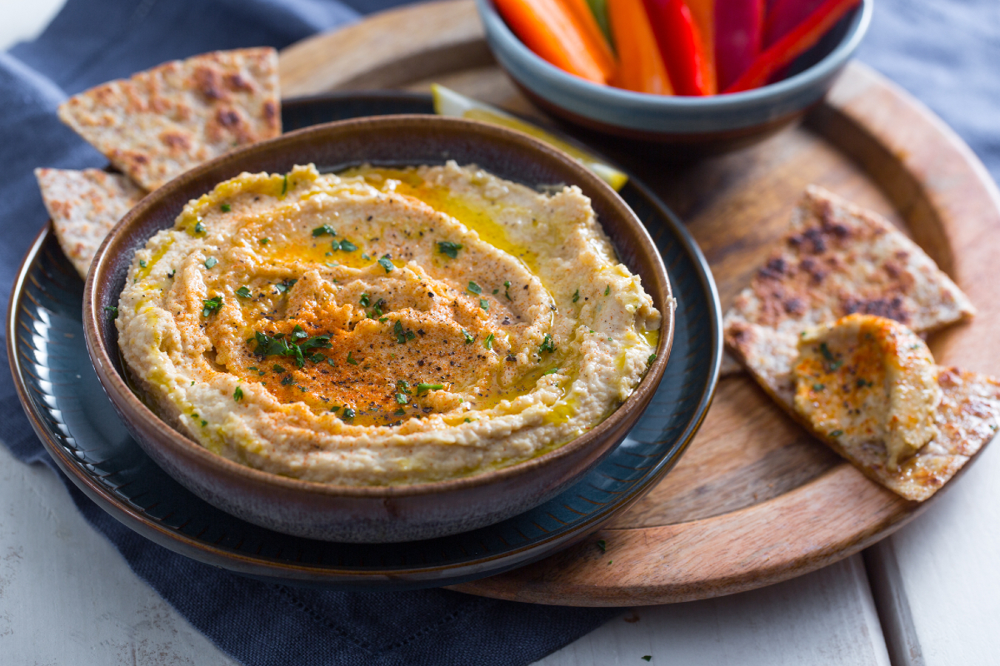
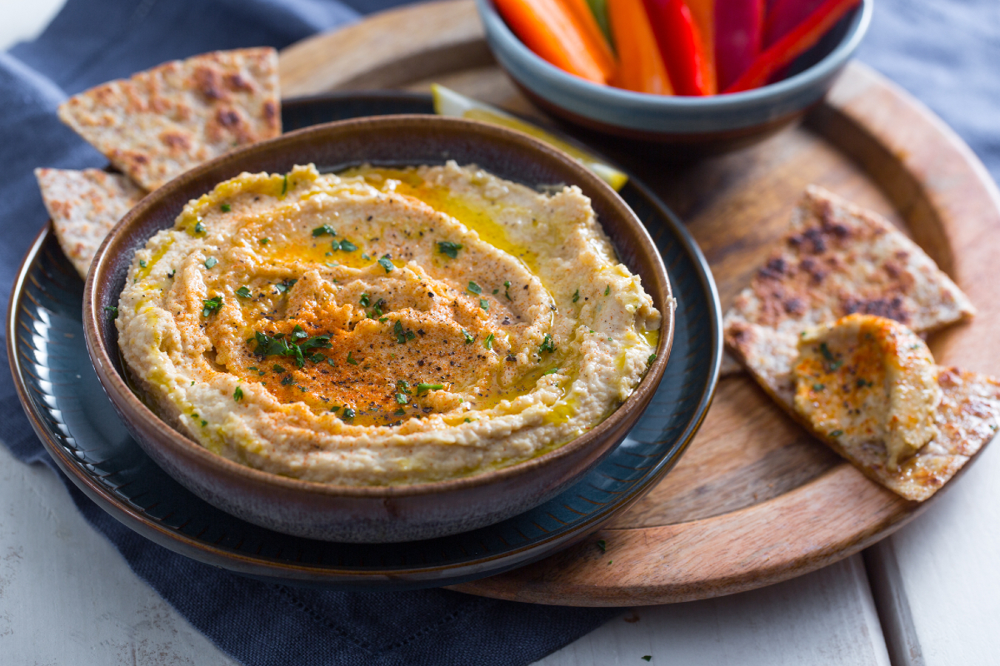

Почетна страна
Класичан хумус
Љути хумус
Наручите хумус!
Откријете једно од најстаријих јела
Хумус је популарно јело које потиче са Блиског истока. То је намаз, умак или паста направљена од леблебије и тахинија, и обично се једе уз питу хлеб, тортиље и слично. Његова популарност не проистиче само из укуса, већ и из велике хранљиве вредности. Најраније познате писане рецепте за јело које личи на хумус би тахини можемо наћи у куварским књигама написаним у Каиру у 13. веку. Хладна пире од нуте са оцетом и укусом укиселих лимуна, зачинјена биљкама, спицама и уљем, али без тахинија или белим луком, појављује се у Канз ал-Фава'ид фи Танви' ал-Мава'ид; пире од нуте и тахинија које се зове хумус каса појављује се у Китаб Васф ал-Атима ал-Мутада: заснован је на пиреу од нуте и тахинија, кисели се оцетом (али не лимуном), али садржи и много спица, биљака и ораса, а не садржи бели лук. Такође се сервира тако што се развуку и остави да стоји преко ноћи.
 
Леблебије су веома здраве јер не садрже холестерол и засићене масти. Богате су протеинима. Зато је хумус омиљен међу вегетаријанцима и веганима. Леблебије су ефикасне у спречавању нагомилавања холестерола у крвним судовима. Поред тога, такође регулишу ниво шећера у крви. Тахини је с друге, пун масти и калорија, међутим користи се у малој количини у припреми хумуса и углавном садржи незасићене масти. Тахини је богат протеинима и калцијумом. Бели лук и сок од лимуна су пуни антиоксиданаса који смањују оксидативни стрес у телу. Они такође раде на побољшању имунитета и боре се против бактерија и вируса.
Хумус садржи доста омега 3 масних киселина, које су одличне за побољшање интелигенције и одржавање здравог срца. Поврх свега тога, ово јело има и гвожђа, витамина B6, мангана, бакра, фолне киселине и амино киселина. Триптофан, [фенилаланин] и тирозин се налазе у хумусу и промовишу добар и квалитетан сан и подижу расположење.
Занима вас како да направите ово укусно јело?
Прочитајте наше рецепте који ће вас одушевити:
 
рецепт за обичан хумус
рецепт за љути хумус
Наш сајт такође ради и доставу свежег хумуса
Пређи на сајт за доставе



 
